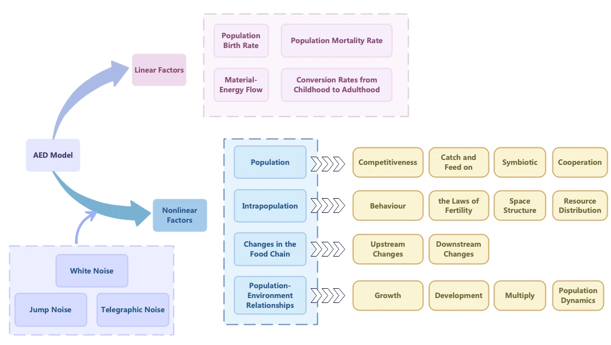
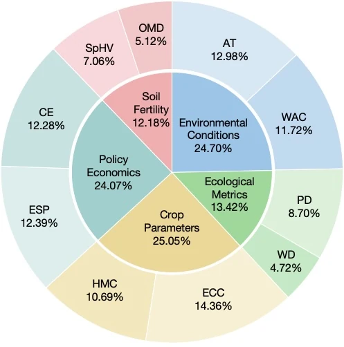

How does the ecosystem evolve?
Examine interacting species over time, and ask how changing conditions or uncertainty might influence stability.
A mathematical modeling research portfolio exploring the tension between ecological resilience, human decisions and agricultural productivity — now evolving into an AI-assisted interactive engineering laboratory.
Agriculture feeds communities, yet land conversion and human intervention change the ecological systems on which production depends. As an engineering-led student team, we used mathematical modeling to reason about dynamic interactions, possible interventions and long-term trade-offs. The 2025 paper is the original record; this 2026+ site is a separate communication and reconstruction effort.
Examine interacting species over time, and ask how changing conditions or uncertainty might influence stability.
Compare management choices, including chemical dependence and the introduction of beneficial species, with controlled model assumptions.
Translate ecological outcomes and economic considerations into a defensible decision framework, with transparent limitations.
Change the parameters and explore a generic three-population stochastic dynamical system. This illustrative educational model is derived from a general interaction equation — it is not fitted to the 2025 paper and its outputs are not contest results or field measurements.
Values are normalized, not measured biomass or yield. The same seed produces repeatable plots.
These figures come from the 2025 submission. Charts show results reported in the paper; they do not validate the illustrative simulation above. See the complete Figure Atlas and page audit for all 15 numbered figures and the farmer letter chart.

Original 2025 research · Figure 2 in the paper (PDF p. 5)

Original 2025 research · Figure 5 in the paper (PDF p. 8)

Original 2025 research · Figure 10 in the paper (PDF p. 16)

Original 2025 research · Figure 12 in the paper (PDF p. 20)

Original 2025 research · Figure 13 in the paper (PDF p. 22)

Original 2025 research · Figure 14 in the paper (PDF p. 23)
The original submission documents a student team's exploration of sustainable agriculture with mathematical modeling. The team leader's retrospective motivation was to apply engineering and mathematical methods to a meaningful interdisciplinary question.
Detailed historical decision logs and individual contributions must be added only when substantiated by the author or archival records.
This new portfolio aims to reconstruct model implementations, extract research evidence, illustrate uncertainty and build interactive educational tools. AI can assist with code, documentation and question formulation — numerical solvers and sources remain responsible for scientific claims.